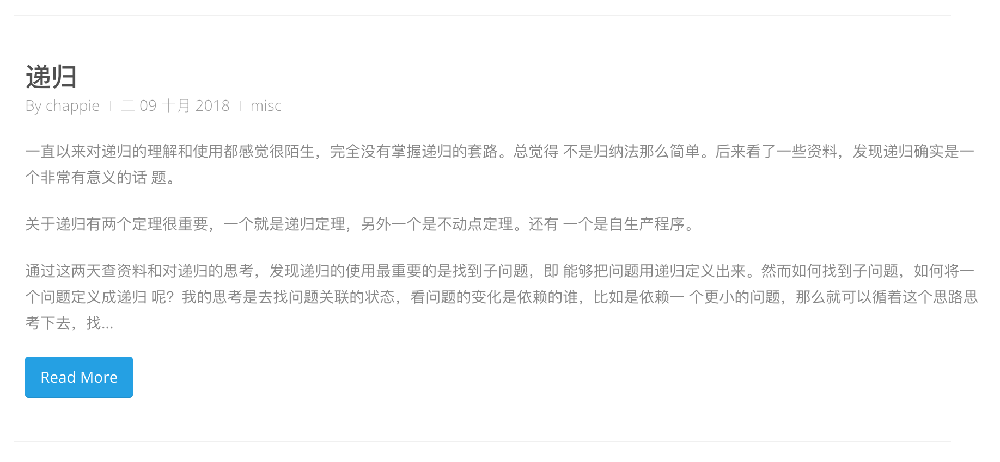
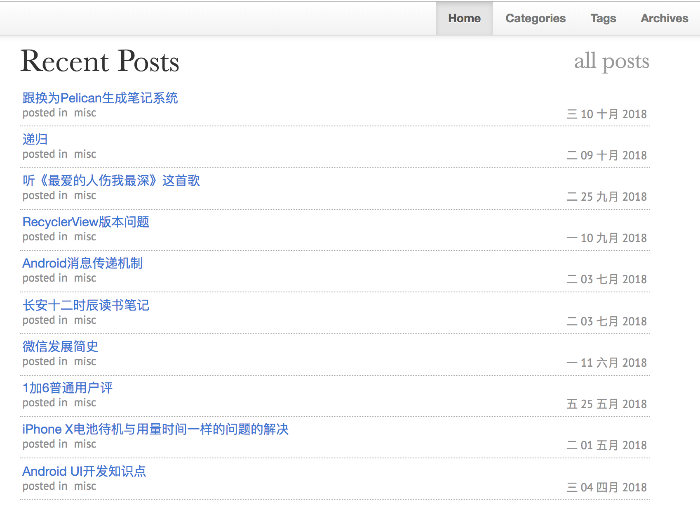
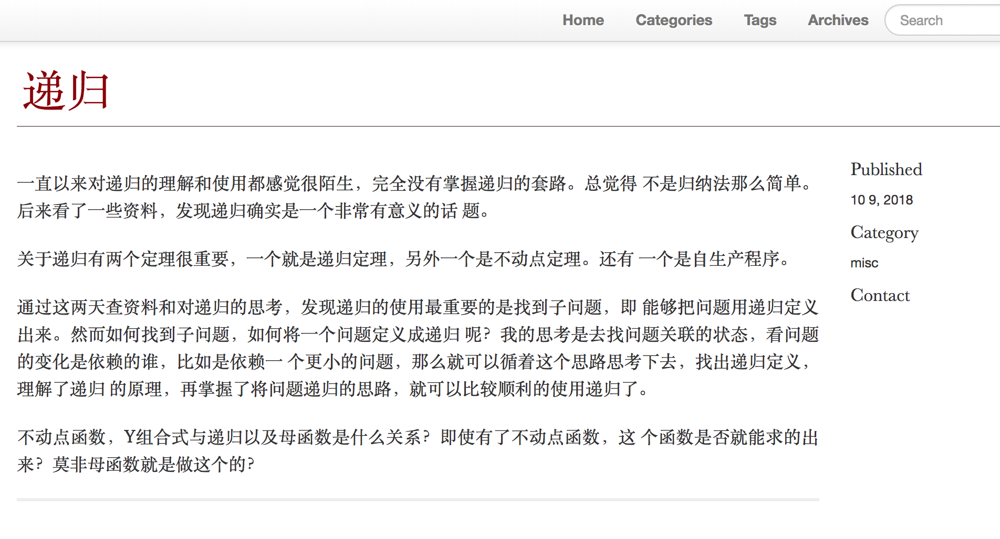

Table of Contents
1 Todolist
- 对org-mode的支持
- pelican有org-mode的插件，但是有两个，一个依赖emacs一个不依赖，而且简单看了下依赖emacs的插件的代码，非常的简单，那么他实现的原理是什么呢？
- 必须有title metadata
- 必须有date metadata
- 文章的唯一标示是什么？推测应该是slug，也就是URL，包括评论应该都会根据URL走，Pelican如果不提供slug，默认会使用title作为slug。考虑自己的笔记的维护基本上是通过文件名，而且git和文件系统也是根据文件名，所以这里唯一标示想通过文件名走，然后默认title根据文件名生成，slug也就是跟文件名一致了，如果需要修改title直接改metadata 就好，不去修改文件名。
- 对图片的支持，和原来的一致，设置静态目录即可，STATICPATHS = ['images']
- 默认语言的设置，这里跟多语言有关，还是要设置一下的
- 自动summary简介，Pelican默认支持，挺好用的
- 内部文件link，这个点需要试一下
- code block，这个点需要试一下
- footer引用的处理
- theme的订制
- base的选择
- 内容的选择
- 侧边栏
- 文章信息显示
- create time
- last modify time
- summary
- author
- …
- 字体
- 外链
- 社交信息
- RSS输出
- 评论
- git自动日期获取
- 优先metadata
- 如果没有提供metadata，根据git的创建时间和上次修改时间生成
- 给个模版自动生成基本的metadata信息
- 去掉org-mode自动生成table-content
果然应该还是利用的org mode自己的export功能，声明了OPTION之后就关掉了toc.
toc其实也挺有用的，但还是决定前期先关掉，如果不关掉themes需要支持 toc的样式，现在这几个theme似乎并没有支持，如果支持的话放在哪里呢？头部？侧边栏？对手机的支持怎么样？所以基于上述问题，先全部关闭就好。
2 想法
- 不自动部署，通过git的push自动部署
- 草稿的处理，使用不同的分支
3 设计
3.1 文章时间
3.1.1 时间戳格式
3.1.2 创建时间
- 新建文件时用模版自动添加，读取当前时间
- 老的文章如果没有，就通过添加到git仓库中的时间获取
3.1.3 最后修改时间
最后修改时间使用git的最后修改时间就好，与创建时间不同，创建时间是从起点算，所以用创建文件时的当前时间比较好，而最后修改时间是终点时间，所以以提交到git仓库为终点较好
3.2 URL
URL要带上日期。然后用默认的就好，默认情况下是slug，slug默认是title，即使是中文也没关系
3.3 theme
浏览器了pelican官方的开源themes，选出以下几个比较喜欢的，每个都有亮点，还是想把这些亮点组合起来
3.3.1 martin-pelican
目前这个是最喜欢的主题了，有一种读杂志的感觉，读起来很舒服。
| 优点 | 缺点 |
| 正文字体很漂亮，读起来很舒服 | 导航较弱，没有把分类信息，tag信息，归档信息暴露出来 |
| 配色和设计风格像杂志期刊，很舒服 | title的字体有点夸张 |
| 图片处理有点问题 |
3.3.2 nice-blog ATTACH
如下图，文章列表的字体的配色，大小，readmore搭配的很好，突出标题，弱化作者，时间，分类以及摘要信息。
其他方面不是很突出，整体感觉不是很精致。

3.3.3 elegant ATTACH
整体很清爽，文章列表很清晰，不拖泥带水，但感觉有点过于清爽了，文章的一些信息有点少了，比如文章作者，创建修改时间，摘要信息，导航也相对较弱。文章详情页排版较弱，而且也缺乏导航信息。
又发现一个很大的优点，对图片的支持很好，可以自动缩放图片。是这几个主题里面唯一一个对图片处理好的主题。


3.3.5 foundation-default-colours
经过对比，最终决定选用这个作为基础theme。有这么几个优点：
- 整体结构和导航比较接近期望的
- 对手机浏览支持的很好
还有需要做调整的地方，可以主体可以参考设计，细节要处理一下字体，行间距，字间距 test
4 做法
- 老的文章没有metadata信息，其实自动化添加页不难，结果python还没用好，最后一狠心一个一个手动添加了，着实有点繁复。